Most animal strikes are never reported to police, so the true numbers are several times higher.
This map is for awareness, not a guarantee of safety anywhere.
How it works
The numbers behind every color, where each input comes from, how gaps are filled, and which
thresholds are judgement calls. Figures are drawn from the same data as the map.
What is counted
Every crash a California police agency reported in 2016–2025 where a vehicle hit an animal (11,859 on
state highways). The officer's own words decide the animal type; the
spelling-to-type table is published.
Animal types
A crash's type follows the words in the police report only; we never guess a species the report does not name.
Deer: The record names deer: deer, buck, doe, fawn, mule deer, Cervidae. Elk is not counted here.
Other wild: The record names a wild species (bear, elk, coyote, mountain lion, bighorn sheep, raccoon, fox, bobcat, any bird, and so on), or calls the animal wild or feral (wild pig, wild horse, feral burro).
Farm animal: The record names a farm animal and does not call it wild: cow, bull, calf, horse, donkey, burro, mule, sheep, ram, goat, pig, hog, boar.
Dog or cat: The record names a dog or a cat: dog, canine, K-9, a dog breed, cat.
Not stated: The record leaves the animal blank, says unknown or just animal, names two animals of different types (dog or coyote, bear/deer), or describes something that is not an animal. A record naming one animal as likely (possible coyote) counts as that animal.
Per mile driven
Each road is cut into stretches of about 3 miles. A stretch's risk is its reported crashes divided by
the miles all vehicles drove on it, using that year's traffic counts for every year. The statewide average is
0.0065 reported crashes per million vehicle-miles; colors show how many times that average a stretch is.
Where the traffic numbers come from
Traffic is counted at points, not along the whole road: Caltrans has 7,125 count stations on state
highways, a median of 1.1 miles apart. Each station reports the traffic just before it and just after
it, and Caltrans treats traffic as constant from one station to the next. The map does the same: every tenth of a
mile between two stations gets the average of the two counts that describe that section. Nothing is drawn as a
slope, and a long gap between stations carries one value all the way.
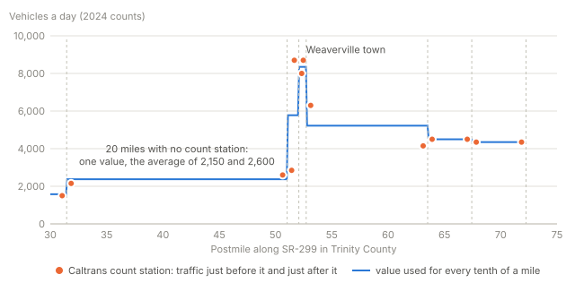
More detail on traffic
Between two stations of the same highway and county: 89% of the road.
Before the first or after the last station of a county section: that end station's value (9%).
County sections with no station at all: the nearest station on the same highway (1.5%).
Each year 2016–2024 uses its own count file. Points missing from a year's file (1.5%–1.7% per
year) take the 2024 value, and the last year of crashes reuses 2024 counts. A count of zero
is treated as missing.
Counts are yearly averages, so there is no seasonal or night-time traffic. Quiet rural roads are counted
least often, and their counts are the least precise.
Placing each crash on a road
A crash counts for a state highway when its reported location is within 100 m of it. The cutoff matches
the police's own judgement: CHP marks each report as highway-related or not, and 96% of crashes
within 100 m carry that mark, against about half at 100–200 m and few beyond. When a report names a different road
(often the cross street), the crash must lie within 30 m of the highway. Crashes without coordinates are placed at
the highway milepost written in the report, when there is one.
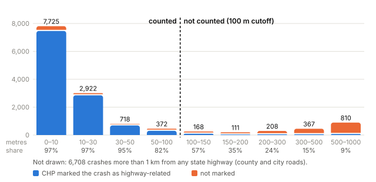
The cutoff drops 855 crashes that CHP marked highway-related but placed more than 100 m from
the road, mostly more than 1 km away, which usually means wrong coordinates.
Where there is no data
Nothing is filled in from neighbouring stretches: the map never smooths along a road or across the state.
Traffic between count stations: the section's constant value, as above.
A stretch with no reported crash: its estimate leans on roads with similar traffic, not nearby roads
(next section). Quiet ones are usually grey, busy ones blue.
County and city roads: no published traffic counts, so they are not mapped.
Why "at least"
A stretch with only a few crashes can look extreme by chance: on a quiet road, one crash in ten years is already
far above the state average. Each stretch is therefore pulled toward the typical value for roads with similar
traffic (under 2,000, 2,000–5,000, 5,000–15,000, 15,000–50,000 and 50,000 or more vehicles a day). Similar traffic, because the crash rate per mile driven falls steeply as
traffic grows:
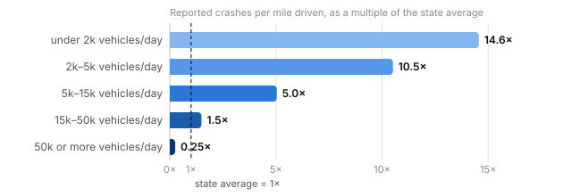
The less traffic a stretch has seen, the more it leans on those similar roads; the more traffic, the more its own
crashes decide. For a typical stretch, its own record carries about half the weight on the quietest roads and
roughly 80% elsewhere:
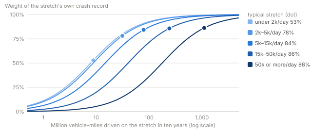
The result is a range for each stretch that we are 80% sure holds its true rate. The color is the bottom of
that range: the level we are 90% sure the stretch reaches. (80% leaves 10% out at each end, so its bottom is a
90%-sure floor.)
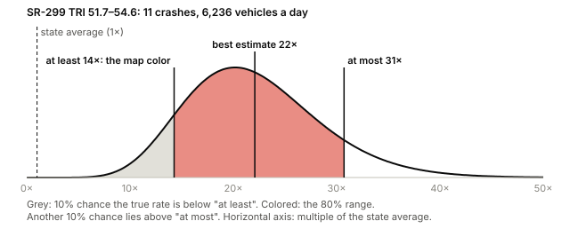
Colored (1× and up): the whole range is above the state average.
Below average (blue): the whole range is below it.
Unclear (grey): the range reaches both above and below the state average, so there is too little
data to tell which. Grey does not mean safe.
A worked example
The stretch where the dashcam clip was filmed, SR-299 TRI 51.7–54.6, step by step. Every number is the one the map uses.
Count. 11 reported crashes in 2016–2025.
Miles driven. About 6,200 vehicles a day (each year its own count) × 365 days × 2.89 miles,
over ten years: 65.7 million vehicle-miles.
Its own record alone. 11 ÷ 65.7 = 0.168 crashes per million vehicle-miles, which is
25.8× the state average.
Similar roads. It carries 5k–15k vehicles a day. From all 1,247 stretches in that group we
fit how their true rates are spread (a Gamma curve, the dashed line below): typically 5.5×, but anywhere
from 0.11× to 14.8× for 80% of them. The curve has two numbers, α = 0.53 and
β = 14.8: the group behaves as if every stretch started out with 0.53 crashes over 14.8 million
vehicle-miles.
Combine. Add this stretch's own record to that starting point: (0.53 + 11) crashes over
(14.8 + 65.7) million vehicle-miles = 0.143 per million, 22.1× the state average.
That is the same as giving 82% of the weight to its own 25.8× and 18% to the group's
5.5×.
Range and color. The combined curve (solid line) has 10% of its area below 14.3× and 10% above
30.7×. The whole range is above the state average and its bottom is 14.3×, so the color is
10×.
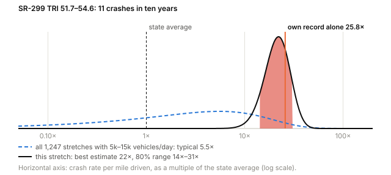
A quiet stretch with no reported crash works the same way, but with nothing of its own to add, its curve stays
almost as wide as its group's. The range reaches below 1×, so it is grey, even though its best estimate is several
times the average:
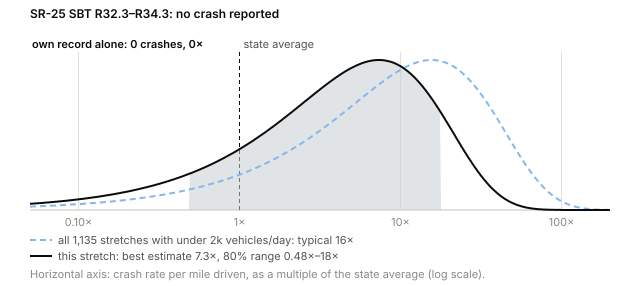
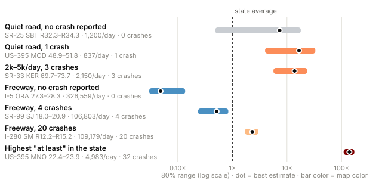
The large number in a stretch's box is our single best estimate. On a grey stretch it leans mostly on
similar roads, so it can be high even where no crash was reported (top row above); the color says what this
stretch's own record shows.
The color steps 1×, 3×, 10×, 30× each multiply by about three. Rates span more than a thousandfold, so equal
ratios read as equal steps. This is a design choice, not a result.
Why an 80% range
A narrower range colors more road but makes more calls that the data later contradicts; a wider one leaves more
road grey. We rebuilt the map from 2016–2020 and from 2021–2025 separately and counted stretches called
above average from one half and below average from the other. At 80%, 41% of the miles are grey and
0.5% of the calls contradict each other. At 70%, contradictions rise to 1.7%. At 90%, they nearly
vanish but grey rises to 50%. 80% sits at the bend.
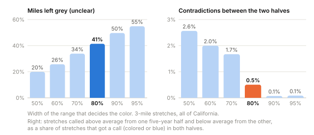
Why 3-mile stretches
Shorter stretches pin a hot spot down more precisely but hold fewer crashes, so more of them stay grey: 59%
of the miles at 1 mile against 41% at 3 miles. Longer stretches gain less and less (36% at 5 miles)
while a short hot spot gets averaged with the quiet road around it. 3 miles balances the two; it is a
judgement call.
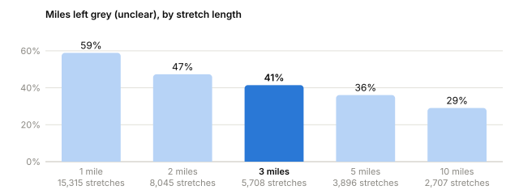
How much data is enough
There is no fixed number of crashes. It depends on how many miles are driven on the stretch: the fewer the
miles, the more one crash stands out. For a typical 3-mile stretch in each traffic group:
Vehicles a day
Crashes in 2016–2025 to color it
With no crash reported
under 2,000
1
Unclear
2,000–5,000
1
Unclear
5,000–15,000
2
Unclear
15,000–50,000
4
Below average
50,000 or more
13
Below average
On quiet roads so few miles are driven that a single crash is far above average, but no crash at all cannot
prove a road is below average either: most quiet stretches with no reported crash are grey.
41% of the mapped miles are grey.
Rankings
Stretches and highways are ranked by the "at least" multiple, the same number that colors the map, so a stretch
with two crashes and a lucky-looking rate cannot top the list. A whole highway's rate is its crashes over all the
miles driven on it, pulled toward the typical highway; a long highway's quiet and busy parts are averaged together.
CDFW wildlife barrier list
The California Department of Fish and Wildlife lists stretches of road (and some canals and fences) that keep
wildlife from moving across the landscape, and ranks them for repair, such as building a crossing. It answers a
different question from this map: a fenced freeway can stop animals completely and so see few crashes, while a
quiet road that animals cross freely can see many. We show the list next to our numbers, not as a check of them.
A stretch counts as on the list when most of it lies within 200 m of a listed segment;
2,499 miles of state highway do.
By month
Each stretch and highway shows its reported crashes by month, colored by animal type, with a grey line for the
statewide pattern scaled to the same total. These are plain counts: traffic counts are yearly averages, so we
cannot say how risk per mile driven changes from month to month, and roads with summer or holiday traffic will
show more crashes then partly because more people drive. With fewer than 10 crashes, the months mostly show chance.
What the map cannot tell you
Only police-reported crashes are here. Insurance studies suggest the real number of deer strikes is several
times higher, and reporting may be lower in remote areas.
Only state highways are mapped: county and city roads have no published traffic counts.
Traffic counts are Caltrans estimates; quiet rural roads have the least precise counts.
Roads are compared with roads of similar traffic only, not with similar terrain or region.
Exact ranks shift from one five-year period to the next; the three-way call (above, unclear, below) holds.
Checks
Risk computed from 2016–2020 predicts the crashes of 2021–2025 much better than traffic alone, and the
reverse also holds. Using the other period's raw counts directly does slightly worse than traffic alone: the
pull toward similar roads is what makes a stretch's own record useful.
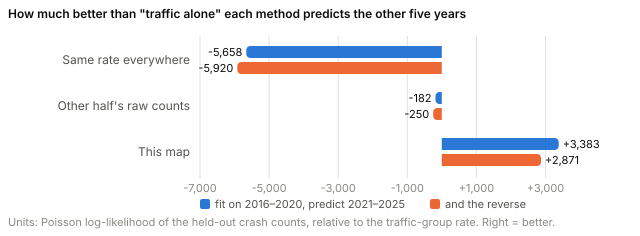
In a hand check of 50 random crashes, all 50 were placed on the road named in the report.
Every threshold and judgement call
Choice
Value
Basis
Crash within … of the highway
100 m
Judgement, then checked against CHP's highway-related mark (above)
… when the report names another road
30 m
Judgement; the hand check found no crash on the wrong road
Crash without coordinates
report's milepost; "x miles east of" ignored
Affects about 2% of mapped crashes
Stretch length
3 miles
Judgement, using the grey-share chart above
Range width
80% (color = 90%-sure floor)
Convention, then the contradiction check above
Color steps
1×, 3×, 10×, 30×
Design: steps of about ×3
Traffic groups
under 2,000, 2,000–5,000, 5,000–15,000, 15,000–50,000 and 50,000 or more a day
Round numbers giving five groups of similar size
Similar roads
by traffic only
Terrain and region not yet used
Traffic between stations
average of the two counts, constant
Follows how Caltrans defines its counts
Road breaks
postmile gap over 0.15 or a 400 m jump starts a new piece
Postmile points are 0.1 mile apart
Short ends
under half a stretch joins the stretch before; under 0.2 mile dropped
Avoid tiny stretches
By-month chart
under 10 crashes marked too few
Judgement
On the barrier list
most of the stretch within 200 m
Judgement; the two datasets draw roads slightly apart
Data and credits
Crashes: California Highway Patrol, California Crash Reporting System (CCRS), data.ca.gov, public domain.
Traffic volumes and highway postmiles: Caltrans Traffic Census Program 2016–2024 and Caltrans GIS
(CC BY). Caltrans does not warrant the accuracy of these estimates and does not endorse this map.
Wildlife barriers: California Department of Fish and Wildlife, Wildlife Movement Barriers [ds2867],
Biogeographic Information and Observation System (BIOS), CC BY 4.0.